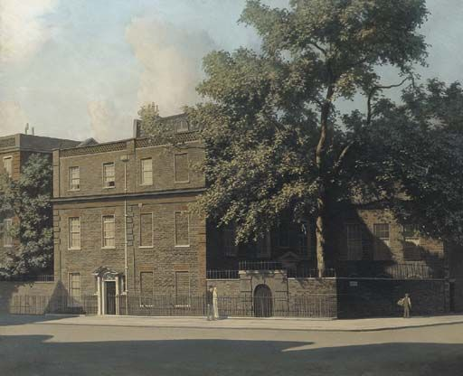

Prose
Next Steps

Her hand shaking, Alex peered into the mirror to tweeze off the last of her glued-on eyelashes. Maddening how one lash stood straight up, refusing to be plucked off. It was like Pompeii’s sentry who refused to leave his post as Vesuvius erupted. Brave man, she thought. Would she have that much courage, facing the end of life? And how on earth did she still remember the story? She used to teach it to her juniors and seniors, and now, on those dratted Mini Mental tests, she couldn’t always say what year it was. Alex sighed, abandoned the eyelash, and dotted on foundation instead. The whole point of looking good today was about Barbara, who was stopping by later at 3:00 to pick up her Tupperware. Maybe she and Barbara could go to the whatchamacallit wine bar near the mall for one of their heart-to-hearts. They were overdue. You can tell your best friend things that you can’t tell your kids.
Like about yesterday. For the first time in her life, Alex, of a generation where husbands insisted on handling all the major machinery, had pumped her own gas. Nudging the heavy, thick nozzle into the tight hole—it was like having sex with your own car--she giggled so loudly that an older, tanned gentleman in the next bay flashed her a smile and a thumbs-up. Was he just being kind? Or was this flirting? Whichever it was, it set off a tiny, squirming thrill. Maybe she still “had it.” Barbara said she did.
“Your tiny, shapely body, Alex! You’re like Tinkerbell! I’m jealous! And those blue-green eyes, not to mention those long eyelashes.”
Alex smiled as she tidied the bathroom, having fooled Barbara with those lashes. Oodles of money poured into the palms of Vietnamese girls at Chez Lash. That was after all her body hair vanished. Arnie, lying naked in their afterglow, once joked about her being as hairless as a chihuahua. Arnie. God, please love him as much as she did. Every night since the memorial, she turned toward his pillow and shared her day, hearing him say in his sleepy baritone, “good,” or “really?” or “for chrissakes, Alexandra, why get all bothered about that?” Last night she told him about seeing a 60 Minutes program- or was it NPR? It was about the Ukraine and Russian war, and while she didn’t exactly follow the story, she liked that guy, Anderson Cooper, and didn’t he remind them of their Brad, that serious, sort of tearful expression he always wore? Remember how Brad cried and clung to me when he had to go to kindergarten? Tonight, she wouldn’t tell Arnie about the man at the gas station.
The doorbell rang downstairs. Dammit, who could that be? Not Barbara. Barbara worked in the thrift shop until 2:00. Alex tapped Calendar on her newly acquired Apple watch, or, as she kidded to the young man at the Apple store, “my newly required”watch. He didn’t get it, of course. He had tattoos streaming down his biceps.
1:00. NextSteps.
Not this. Why had she placated Natalie on the phone last week and let her arrange this?
“We know it’s very soon after Dad’s death, Mom, but there’s this lady in Hartford who helps people downsize and move.”
-What do you mean, move? Move to Prague to be with you and the kids? I love your Joe, but--
“No, no—”
-To Washington, then? With Brad and his family? His Jessica doesn’t like me. Wait. Not to Missouri, surely! Emily and Josh have too many toddlers, and Missouri might as well be in Texas. You know I’m a Democrat, and I still help run our local elections, so I would just die--
“We mean, Mom,” interrupted Nat, “ --to senior living, in your own community, which you love. You’ll be safe there, and get more help with your, you know, your issues.”
Alex, aghast, had almost hung up the phone. It stung to hear that the kids didn’t want her living near them, but senior living? She’d been to one of those places once, with her mother, Maria. They had rushed away after watching many, many, old, old people rush to dinner behind their walkers and scooters. “Like warthogs spotting the zookeeper,” her mother said, and Alex’s car had rocked with laughter all the way to Starbucks. Maria got her wish and died at home at age 101, drifting away in her lounger, her calendar for the month filled in with yoga classes, a lunch date and manicure, and the place and time of her next reading group. Her life runneth over, then simply stopped.
-No, Nat, no. I’m not ready for that. You mean, leave our house?
“Dad is gone, Mom; it’s only your house now, and, with your Parkinson’s, it’s too big for you to manage. We all worry. Why not just talk to someone? I put an appointment with Next Steps on your Google calendar, and you’ll see it on your new watch!”
It was too soon, goddammit, and not just because she broke down weeping every time she touched something that Arnie had once used--his razor or toothbrush, even the garbage cans she dragged to the curb- but because being treated by your three grown children like you were 10 years old and not 81 upset the natural order of things. She should be advising them, not the other way around. Number One, their kitchens were a mess, and no one seemed to know how to fold a towel or fill out an absentee ballot.
The doorbell chimed again. Alex padded across the soft blue bedroom carpeting toward the hallway, feeling like there were weights atop her feet.
“The Parkinson’s is progressing because of stress, Mrs. Littlefield, which also increases your confusion,” Dr. Alpin said as he renewed her Levodopa. Had she already taken her dose today? Maybe not. Another one wouldn’t hurt. She backtracked into the bathroom and gulped back another pill before stepping as fast as she could down the corridor toward the stairs.
How would moving into a home for the aged help her Parkinson’s? More stress! After Arnie dropped dead -- getting into the car for his toenail appointment, of all the things--she was actually adjusting, starting to like not cooking Arnie’s daily dinner, having the bathroom all to herself, and taking all the time she wanted in there. She was getting through things, one task a day. Yesterday, she put gas in the car. All this morning, remembering the little flirtation, she worked on her haggard face. In the bathroom sink, crouched like a dead octopus, was the slimy, blue remains of a facial mask.
Her wrist buzzed. Someone, probably this Next Steps person, was calling and, dammit, her cell phone was all the way down in the kitchen.
“Sorry, whoever you are, I’ll be right down!” she hollered into her wrist. The kid with the tattoo showed her how you could talk to a caller through your watch, but didn’t the person on the other end also need an Apple watch? Wasn’t there something to push? She couldn’t remember.
“Okay, okay, I know you’re at the door. Hold your horses! ” she yelled into her wrist, wishing she had refused the watch.
Brad had insisted, clamping it on her wrist before he drove home, 350 miles away.
“Just in case you fall, Mom,”
Fall? For God’s sake, she could still do 15 sit-to-stands and curl a five-pound weight she kept under the kitchen table. Arnie also had gotten an Apple watch for Christmas, but neither of them wore it. What, and take off the handsome gold watches they’d gifted to each other for their 50th?
Of course, that little defiance had been a terrible mistake, she recalled with a shudder. Two months ago, she had wished for those Apple watches when she found Arnie in the garage, collapsed. No heartbeat, no breath. Screaming his name over and over. Kneeling over him and thrusting into his pockets for his phone. Forgetting the code to unlock it and hauling herself into the house to call 9-1-1 from the wall phone, wasting precious minutes of Arnie’s life. She fought against remembering what happened next.
Steadying herself on the hallway wall, Alex walked past Brad’s room without looking in. It’s where she had dumped all the things connected to “should.” Like the blank thank you notes in little Ziplock bags labeled “Muelig’s Funeral and Cremation Service. ” Like a pile of unopened sympathy cards and notices from insurance companies stamped “Urgent.” On the back of Brad’s door hung Arnie’s navy business suits, some still sporting his badge “Arnold Littlefield, CEO.” On the twin bed, she knew without looking, were Arnie’s golf pants and shirts, clothes he was saving until next spring if his heart could be miraculously cured of V-Fib.
Right before the stairs, Alex stopped in Nat’s room to peer outside. There was a large white SUV in the driveway, and a woman in a white down coat and black knitted cap was walking circles in front of the door, like a confused penguin. Well, let her wait, Alex sniffed, Plopping down onto Nat’s vanity bench, she felt an angry redness coursing up her neck. First, Arnie suddenly dying, and now this, this invasion. Why should she allow this person to throw away all her belongings, especially the kids’ things? Her eyes fell on Nat’s bulletin board, still enshrined with swimming ribbons and Camp Skeedaddle badges, pinned up in order of years. She’d kept Emily’s cherished American Girl dolls. Brad’s tennis rackets and downhill skis still lined one wall of the garage, next to Arnie’s tools. Their children lived so far away now. They had raised their families all by themselves, without her. In Nat’s mirror, Alex saw that her head had begun that ridiculous, horrible shaking that made her look like one of those bobbleheads she once bought for the grandchildren at a Bruins game. She grabbed her skull with both hands and compressed it. Head: Stop! If Next Steps saw her like this, it would be the first nail in Alex’s coffin.
The doorbell again, insistent now.
“I’m coming, I’m coming!” she called down into the atrium. How large the house had grown since Arnie died. On most days, she felt like she was floating in a giant, rudderless, spaceship.
Alex paced carefully down the curving stairs, gripping the banister. At the landing, she stopped to catch her breath, and before she tackled the last set of stairs, glancing down at the tiled foyer, she froze. A small, grey, rounded thing lay on the floor, huddled next to the coat closet. A mouse. “Arnie, Arnie!” she wanted to scream but stifled it. Panicking would be another nail in her coffin if the Next Steps lady heard a scream. Alex willed herself to take stock of the situation and deal with it. There’s only you, Alex, so keep your eye on the creature. The mouse was very still, probably frightened. Slowly she rounded down the next flight of stairs, breathing fully and deliberately, fueling her courage. If it ran into the kitchen she’d hunt it down. If it ducked into the closet, she’d stuff some towels under the door to trap it, and then she might have to kill it, like Arnie did. Ticking through the possibilities—broom, shovel, frying pan—the mouse came into clear view. It was a rolled-up grey sock. It must have tumbled out of the clothes basket she’d brought upstairs from the basement this morning. Alex almost laughed out loud. Since she began living alone, her mind sometimes played tricks like this. She would catch something moving out of the corner of her eye and mistake it for an intruder. You dope, Alex whispered, chastising herself. She picked up the sock mouse and kissed it--it was one of Arnie’s golf socks—then held it tightly. It would be a story to tell Next Steps, as proof of her bravery and competence. Out came the smile Alex was famous for: her teeth—all her own—gleaming white, her eyes wide, her chin lifted, shoulders back, the look of a woman who, despite a little shaking and forgetfulness, was together and capable. Mrs. Next Steps would see that. In a few minutes, sitting on opposite ends of her white Pottery Barn couch, they would quickly dispense with the interview, snickering and eye-rolling together about the overreactions of adult children. Alex undid the locks and, with a flourish, pulled open the heavy door.
Only a chilly gust greeted her. Leaves crossed the threshold into the foyer, tickling her ankles. The woman was gone. No car in the driveway, no car idling on the cul-de-sac. It had taken so long for Alex to get to the door, Next Steps had given up.
Thank God. Alex closed the door, leaned back against it, and threw up her hands as if to hug the entire house. It was hers again. She stared ahead at her long, new future in the house, smiling, imagining the days ahead, shaped just by her, doing just what she wanted. Her eyes fell on the smooth oak banister with the curved volute at the bottom, like the top of a delicious cinnamon roll, Arnie used to say. How he made the kids laugh by pretending to lick it. She conjured them all leaving each morning for school right where she stood, the children laughing at Arnie’s antics while she juggled lunch bags, found mittens, and helped them all on with their boots, especially Brad’s. He was their hardest, and not just because he was their last, but because he clung to Alex every day like a koala pup, and Arnie had to pry him off and carry Brad screaming into the school bus while Alex stood in the doorway waving, tears streaming, heart breaking. His separation protest didn’t last but a month. Arnie helped Brad find soccer, then basketball and baseball, and the father-son explosion into sports severed the strong, silken tie Brad had had to his mother. Maybe he never forgave her for those terrible mornings. Because of Brad, she’d never again go into the attic, where her oldest, most precious things lived. Her legs began to tremble, a sign she needed to sit down and get some water before her hands started shaking too badly. She wall-surfed into the kitchen, filled a glass with water, and eased down into a kitchen chair pulled up to the breakfast table. The attic was why Next Steps had come and why the lady would, no doubt, return again and again, until Alex relented and left the house. This afternoon she should tell Barbara the story.
When the kids came up to Connecticut for Arnie’s memorial service, bringing Alex and Arnie’s nine grandchildren, she was seized with the idea of surprising them with their parents’ childhood toys. It was the perfect way of showing them that life goes on after one generation dies, right, Barbara? she’d ask. What passes from one line to the next is not just money or history or stories, but things! The toys were in the attic, reached by a ceiling door in the upstairs hallway. To pull the attic rope hanging from the ceiling, she needed something to stand on. Sure, Arnie wouldn’t have approved. She had vowed to him after her diagnosis that she’d never go up a ladder, but she’d seen him do it hundreds of times. Yes, maybe a bad idea, but wait! This part of the story is good. Perching on an oak kindergarten chair from Brad’s room she pulled on the thick, knotted rope and, voila! Down floated the stairway in a cascade of dust. She climbed up carefully holding onto a little pipe banister and found Arnie’s Coleman flashlight right at the attic’s entrance.
It smelled wonderful, she’d tell Barbara, like rich, ripe oldness. A whole lifetime flew back. Cardboard boxes marked “Weddings,” “Kids Art,” and “Scuba Equipment.” Her parents’ best china, stacked on low shelves in cushioned storage bags. A giant papier-mache Boston Bruin head Arnie had made for Halloween. Brad’s red hockey duffel, the girls’ Little Tykes dollhouse. And, next to that, a giant, black garbage bag. Untying the knot and peeking inside, there it all was, Barbara. Castle Lego sets and Barbies, the Fisher-Price Barn, Brad’s John Deere Tractor and Matchbox cars, Disney and Star Wars figures by the gazillion, even Darth Vader!
Careful step by careful step, she had backed down the stairs dragging the garbage bag. The day after the service, promising all the kids a surprise, she sat them in a circle on the carpet, and retrieved the bag from the laundry room.
“What is it, Grandma? A puppy?” asked Ollie, Natalie’s youngest.
“Stupe. Dogs can’t survive in garbage bags.” That lecture from his cousin, Lee, Brad’s oldest.
“A basketball hoop!”
“A new doll-house?”
“Ice skates for everyone!”
Alex delighted in every wrong guess. Finally, she lifted the garbage bag as high as she could and upended it onto the floor. Out poured toys in a heap. The children were so happy at the trucks and games and Star Wars figures that they didn’t notice an old sunflower wreath which had been at the bottom of the bag, and what showered down next, in a terrible, musty, dusty mess, were a couple of dead mice, all black and shriveled up, mouths open, eyes hollowed into holes.
“Gross,” barked Lee, as the younger children drew back from the pile, screaming and crying.
Alex quickly lowered herself to the floor to cover the mice with the garbage bag, saying sorry, sorry, sorry, over and over, but the whole commotion drew parents into the family room, still holding wine glasses. Emily quickly herded the children outside, while Brad lifted Alex by her elbows, and Natalie dusted mouse droppings off her mother’s knees. They led her to the couch, where she wept.
“Mom,” said Natalie, her head moving to the front of Alex’s like a dental assistant, her voice lowered into a quivering, whispery pitch. “Mom, what–-the–-hell? What were you doing, going up the ladder into the attic, and where oh where has your judgment gone?”
Brad suddenly jumped up and ran off toward the garage, yelling ‘for once and for all,’ reappearing in the doorway with Arnie’s tool kit. As he rushed up the stairs toward the bedrooms, Alex broke free of Natalie and followed him, all the while calling out like she used to when he was 16 and she caught him rummaging through her purse for the forbidden car keys. “Now Bradley James, just you wait until we talk about this.”
It was too late. She heard the loud bangs of a hammer, and, when she finally arrived upstairs, he was standing on Nat’s vanity chair, nailing shut the attic door in the ceiling, consigning everything from the past to an eternal darkness, turning the attic into an upside-down coffin.
-Brad! No! Stop it! Take those nails out! I promise to get help next time I go up there. I swear, I will. This isn’t necessary.”
Natalie had come up behind her. “Really, Brad, this is harsh. Mom has learned her lesson, haven’t you, Mom?”
Emily heard her mother weeping and swept up the stairs to the hallway, holding little Chelsea, her diaper half on, half off.
“What’s going on now---Brad? This is upsetting Mom.” Brad, still roiled, his face steely and self-righteous, seemed deaf to complaints. To blunt the sounds of hammering, Alex closed herself off in the bedroom for the rest of the day and night, and cursed Arnie for dying, her hands pounding his pillow, over and over.
The next morning, with the family all assembled in the driveway to say good-bye, she gave the girls and their spouses and all the kids tight, long hugs. Brad, rebuffed, opened his arms to invite Alex into a big, conciliatory hug but she turned away and leaned her cheek forward, for a weak kiss. Children could be a big disappointment.
The phone buzzed in her pocket, a signal that Barbara was on her way, and it was time to find the Tupperware. But from her phone, Alex saw that it was Natalie. No doubt Next Steps had reached out to her to complain that no one was home. Alex tightly pursed her lips together. Answering Natalie’s phone call would feel like answering to her, having to defend herself for not going to the door right away. Next, a buzzing text from Nat: “What’s wrong Mom? Are you hurt? PLEASE CALL ME! OR DIAL 9-1-1.”
What was wrong was this whole unnecessary morning. Alex slumped back into the kitchen chair, fingering the pretty silver and gold salt and pepper set she and Arnie had used every day to season their poached eggs.
In less than a minute, her wrist tingled again, this time, Emily, no doubt prodded to call by her older sister. Alex pressed the side button of her phone and held it until it went black. It was ruthlessly pleasurable, like she was killing a small mean animal who deserved to die. Turning off her phone wouldn’t fix the problem, but she had the courage to stand her own ground, like the sentry at Pompeii. Even if Brad was streaming up from Washington in a moving van, she’d refuse to budge out of this house, she and Arnie’s house. What was he going to do about it? Drag her off, kicking and screaming?
The thought made her laugh. Once, she eagerly awaited calls from these children. On dull, lackluster days, their voices and stories were like sprinkles of diamonds reflecting back sparkling news of beach vacations and dance recitals and job promotions. How could she explain to her children what it would be like to find yourself plucked out of your house, all your things given away. After 60 years, objects were inseparable from the people who touched them. Every room in the house thrummed with memories, carried histories of moments lived. If she ever decided to sell the house, each object would have to be carefully examined and remembered for its exact place in her and Arnie’s lives, then passed on or given away with care, not just pitched into resale boxes because it was ugly and useless.
That salt and pepper set, one she and Arnie had brought back from Japan, would go to Emily, who was a painter. She remembered how they came to buy it, how they had broken from their tour group and walked beneath cherry trees which were so full of flowers that some rode atop Artie’s bald head while they strolled. A few even found their way into Alex’s cleavage. In a gift shop, they exclaimed about how delicately the flowers were painted on the salt shaker. The flowery print dress she wore that day: was it still in her closet? It might be Nat’s size.
Gazing outside, her eyes were drawn to the towering arborvitae she and Artie planted when they first bought this house, and those hunkering boxwood shrubs. With great effort, using his father’s sturdy wheelbarrow, they made gravel pathways around the shrubbery. This was for the kids who bounded into the yard trailing cardboard boxes filled with crowns and swords and capes, while she and Arnie watched in wonder from the deck.
Was it really a half century ago, Arnie? Alex looked over at where Arnie would be sitting at the table and saw him nodding and smiling, his eyes twinkling. He didn’t answer. Instead, his face went rigid and frozen, like he’d had a stroke, maybe even a fatal one, because the clean edges of his weekend plaid shirt and khakis, clothes she had just ironed for him, were fading. She reached out her hand to grab onto the faintest image of his arm, but her fingers squeezed only at the air.
“Arnie! Arnie!!”
She could no longer make out his face.
“Don’t leave me, Arnie!!”
Was he dying? In the distance were sounds of sirens, getting louder and louder. Thank God. It’s the rescue squad, an ambulance. Hurry, hurry, please, they had to hurry.
And they did hurry because the doorbell rang again and again, followed by some terribly loud thumping and pounding against the front door which shook the whole house, and seconds later, after a loud crash, two large, men smelling of oil and rubber burst into the room.
Alex put up her hand to stop them. She could no longer see Arnie, he was that far gone, but she knew he was still there in the kitchen, reaching his hand back for her.
“Hold on, Arnie” Alex whispered. “People are here to help us, sweetheart, just grab onto my hand, and you’ll be alright. The next thing is the hospital and I’ll be with you every step of the way, every single step. You’ll be okay, darling, just hang on, hang on. Can’t you do that? For me?”
#
Patricia Pasick is an Asian-American writer based in Ann Arbor who, after decades of non-fiction writing, is now venturing into long and short form fiction. Formerly a clinical psychologist and family therapist, she began her publishing career with Almost Grown, published by W.W. Norton, which has sold 25,000 copies to date.